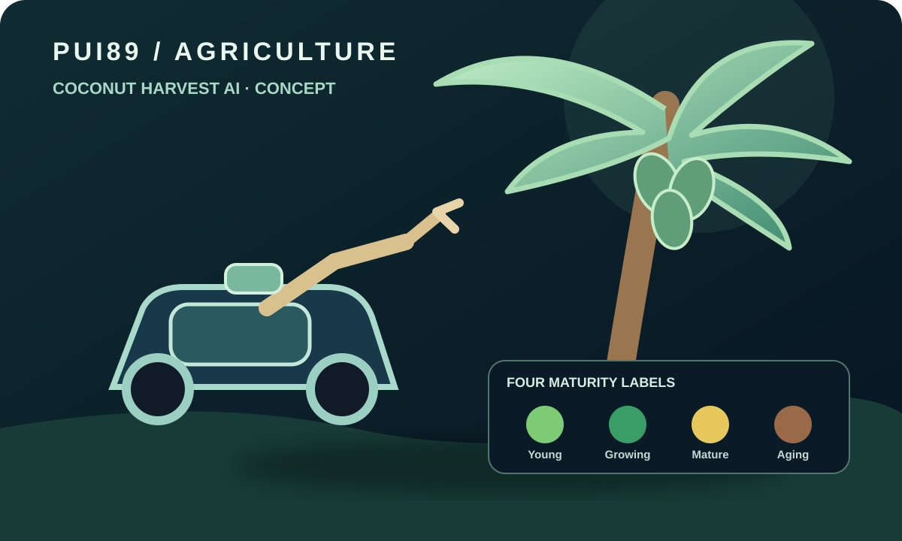

Harvest timing
Maturity, cultivar, lighting, occlusion and orchard conditions complicate consistent assessment.
A developing AI application for coconut maturity assessment, alongside a proposed harvesting-robot concept focused on safer, evidence-informed orchard workflows.

Software foundations and evaluation tools are in development. The maturity taxonomy is a working design. No validated detector accuracy, field harvesting, robotic reach or physical safety performance is claimed.
Maturity, cultivar, lighting, occlusion and orchard conditions complicate consistent assessment.
Tall palms and manual harvesting can create access and falling-object risks that need careful engineering.
Growers need understandable recommendations, uncertainty and a record of why an observation was flagged.
Image intake → quality and provenance checks → future maturity estimation → uncertainty and human review → evidence record. Four working maturity categories: young, mature green, yellow and brown-aging. These are proposed labels; classification boundaries require agronomic review and measured validation.
A proposed harvesting arm would approach, grip and cut a selected coconut bunch. The collection method is configurable: use an optional removable basket to capture the bunch, or use a controlled drop-after-cut approach where a separately assessed clear landing zone and exclusion area make it appropriate. The arm, cutter, basket, lowering/drop control and safety interlocks are design proposals, not built or validated hardware.
This project is still in development. It is not a finished product.
Qualified specialists must identify applicable standards, laws and site requirements. Mentioning a standard does not mean PUI89 is certified or compliant.
Growers, agricultural researchers, computer-vision engineers and robotics specialists can help review requirements, data quality and safe test milestones.
Discuss support or collaborationOpen project repository ↗